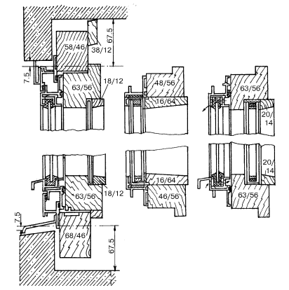

Комбинированные окна.

Комбинированные окна –окна из различных материалов, появились, как следствие желания человечества приблизиться к идеальному окну. Каждый материал имеет свои достоинства и недостатки, и в данных конструкциях сделана попытка объединить достоинства материалов, а их недостатки свести к минимуму. Главный недостаток таких окон на сегодняшний день, который сдерживает широкое применение их в строительстве, – это высокая стоимость.
В комбинированных окнах используют следующие сочетания различных материалов:
• алюминий (медь) + дерево;
• алюминий + пластик;
• алюминий + дерево + пластик;
• прочие сочетания.
Наиболее распространенными в настоящее время являются дерево-алюминиевые окна. В такой конструкции дерево защищается снаружи металлической накладкой или все наружные створки выполняются из металла, а внутренние из дерева. Естественно, что такие окна имеют разную стоимость. Деревянные окна с алюминиевыми накладками дороже просто деревянных, но гораздо дешевле окон с алюминиевыми створками.
Достоинства окон с наружными алюминиевыми (медными или латунными) профилями:
• профили надежно удерживают остекление;
• дерево приобретает дополнительную защиту от неблагоприятных атмосферных воздействий и предохраняется от гниения;
• профили способствуют отводу влаги от переплетов;
• анодированные или лаковые покрытия позволяют подобрать любые интересные цветовые решения;
• не требуют специального ухода за поверхностью, а также периодической окраски, неизбежной для дерева.
Конструкция дерево-алюминиевых оконСуществуют два вида конструкции дерево-алюминиевых окон:
• если окно однорамное (с одинарным переплетом), то используется алюминиевая оболочка, механически прикрепляющаяся к деревянному оконному профилю при помощи специальных зажимов;
• если окно двухрамное (с раздельным или спаренным переплетом), то возможны два варианта:
• алюминиевая оболочка механически прикрепляется к внешней деревянной оконной створке специальными зажимами, при этом внутренняя створка остается без изменений;
• дерево-алюминиевое окно состоит из двух окон: внутреннего деревянного и внешнего алюминиевого, которые могут быть соединены между собою скобами.
В случае, когда алюминиевая оболочка крепится к деревянному оконному профилю, во избежание скапливания на внутренней стороне металла конденсата, необходимо отделить дерево от металла специальным изоляционным слоем, предотвращающим вредное воздействие конденсата на дерево.

Рис. 15. Дерево-алюминиевое окно
Внимание
Существуют также комбинированные окна, где на металлический профиль с внутренней стороны помещения надеваются декоративные планки из дерева твердых пород. Такое окно защищено от всех атмосферных воздействий снаружи, а внутри воспринимается теплым и уютным. Эти окна, помимо своих высоких эстетических качеств, хороши еще и тем, что они достаточно долговечны.
Также существуют деревянные окна с пластиковой оболочкой, защищающей древесину, пластиковые окна с декоративной металлической оболочкой.
Есть комбинированные окна, в которых сочетаются три разных материала:
• дерево, как декор;
• пластик, как теплозащита;
• металл, как материал конструктивный, а также защищающий другие материалы от вредных атмосферных воздействий.
ПодоконникиДеревянные подоконники –хорошо сохраняют тепло, создают ощущение тепла и уюта в комнате. Для того, чтобы деревянный подоконник прослужил долго, его необходимо защитить от возможного соприкосновения с влагой путем окрашивания. Изготавливают деревянные подоконники из досок или материалов на основе древесины.
Подоконники из искусственного камня, мрамора или керамической плитки – обладают большей, чем деревянные, теплопроводностью, но более долговечны и неприхотливы в эксплуатации.
Совет
Ширина подоконника рассчитывается таким образом, чтобы не мешать потоку теплого воздуха от радиаторов отопления смешиваться с холодным воздухом, идущим от окна.
Установка подоконников производится так, чтобы они лежали на нижней части проема и с обеих сторон заходили в тело простенков не менее чем на 5 см.
При очень широких проемах и незначительной площади их нижней опорной поверхности, подоконники делают из Т-образных стальных профилей, заделываемых в стену цементным или известковым раствором.
При установке подоконника необходимо создать небольшой уклон внутрь помещения, чтобы влага не могла проникнуть в стык оконной коробки со стеной.
В деревянных переплетах для этого делают специальный вырез, в металлических и пластиковых переплетах шов с подоконником заделывают мастикой.
Укладывают подоконники на постель из цементного раствора. Перед укладкой раствора на кирпичи, в нижней части проема их смачивают. Раствор укладывают с некоторым избытком и слегка разравнивают мастерком. Укладывая на раствор подоконник, последний постукивают для равномерного схватывания с раствором. Затем необходимо проверить укладку подоконника уровнем и окончательно заделать.
Декоративные подоконники. В типовых домах, где в большинстве случаев имеются узкие цементные подоконники, можно установить более широкие накладные декоративные подоконники, которые необязательно заделывать в стены. У таких подоконников будет только одно ограничение – их толщина должна быть чуть меньше зазора между стационарным подоконником и оконным переплетом.
СливыСливы необходимы для быстрого отвода дождевой воды и предотвращения ее попадания в стены и на оконную коробку. Материалами для изготовления наружных сливов служат легкие металлы, оцинкованная листовая сталь, медь, керамика, естественные или искусственные камни.
Установка сливов производится с уклоном не менее 10° от плоскости окна. Концы слива заделываются в стену, края металлических профилей загибают С-образно. При использовании других материалов места примыкания сливов к стенам уплотняют мастиками. Слив укладывают на растворную постель. Если полная герметизация стыка стены со сливом не обеспечивается, его следует проклеить полосой рубероида или подходящей пленки либо применить зачеканку расширяющимся цементом.
При длине слива более 1,5 м по его концам должны быть предусмотрены температурные швы шириной около 0,5 см, которые следует заполнить мастикой.
СтавниНаибольшее применение ставни получили в индивидуальных жилых домах, где помимо тепло– и солнцезащиты они могут играть и роль дополнительной защиты помещений от злоумышленного проникновения.
Ставни бывают распашные, сворачивающиеся (шторные) и раздвижные. Выпускаются ставни, закрывающиеся и открывающиеся изнутри при закрытых окнах, а также очень плотно закрывающиеся ставни, хорошо сохраняющие тепло. Крепление ставен обычно производится непосредственно к рамам, но возможно и их заанкеривание в стены.
Распашные ставни чаще всего делают из дерева, поэтому их необходимо тщательно обработать с наружной стороны, защитив от проникновения внутрь материала влаги.
Совет
Конструкция ставен должна способствовать свободному стоку воды наружу и исключать возможность проникновения влаги в стену и к окну.
Сворачивающиеся ставни выпускаются из дерева, пластмасс или алюминия. Для изготовления шторных ставен используют тонкие рейки, так как диаметр ставни в свернутом виде не должен быть большим. Они имеют специальные футляры, которые устанавливаются под перемычкой окна и крепятся так, чтобы не нагружать ее.
Часто при строительстве устанавливают массивные футляры для ставен, которые служат одновременно и теплоизоляционной прослойкой и перемычкой. Пластиковые и алюминиевые ставни имеют установленную теплоизоляцию. Деревянные ставни являются хорошими теплоизоляторами, но очень прихотливы в эксплуатации и слишком тяжелые.
Крепление футляров шторных ставен производят к верхнему наружному откосу проема. Если футляр выступает из плоскости стены, то его необходимо защитить от влаги в местах примыкания к стене мастикой или созданием уклона наружу. При этом варианте ставни будут разворачиваться в направлении к окну.